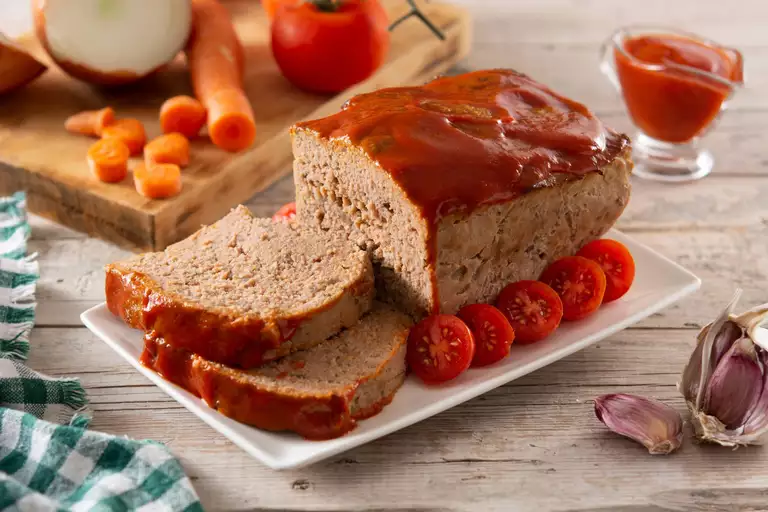

MEATLOAF

- Prep Time : 30mins
- Cook Time : 1hr
- Total Time : 1hr 30mins
- Serving : 10
When you're in need of delicious comfort food that everyone in your household will love, a traditional meatloaf is the way to go. It's a classic meal, and it's an incredibly simple one too.
This top-rated recipe from Chef John is sure to become a family favorite in no time. And with only 30 minutes of prep time, you won't mind making it every time it's requested!
Traditional Meatloaf Ingredients
- Ground Chuck
- Vegatables
- Worcestershire Sauce
- Egg
- Spices
- Bread Crumbs
- Glaze
How To Make Meatloaf Step-By-Step
- Chop the Vegetables
- Form the Meatloaf
- Bake
- Make the Glaze
- Glaze the Meatloaf